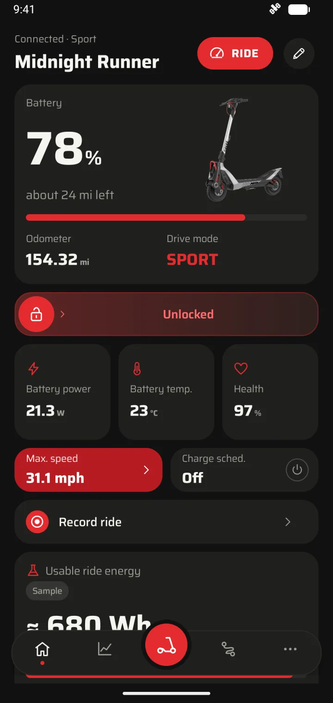
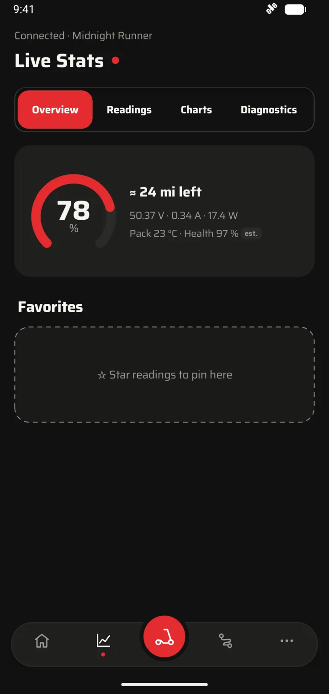
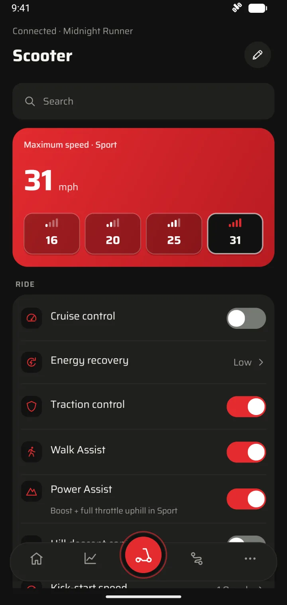
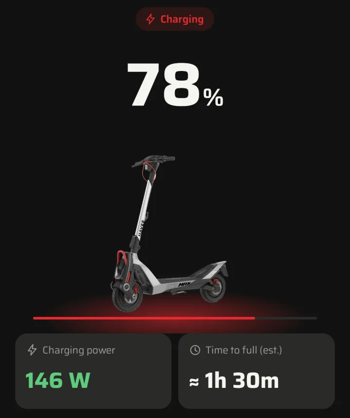
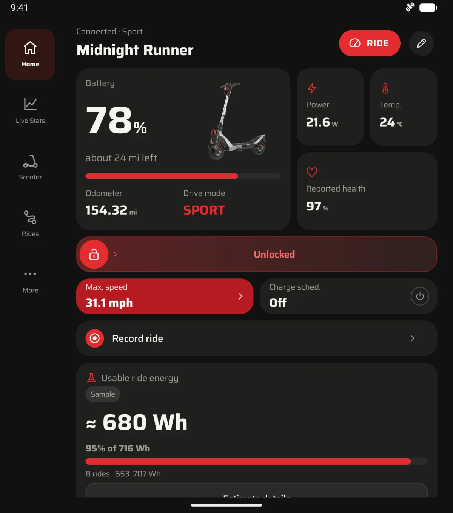
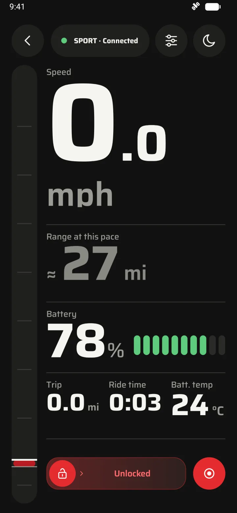

Lock it. Unlock it. Offline.
The Lock bar talks straight to your scooter, with no signal needed. Volt shows the change once the scooter confirms it.
Connected · Sport
A demo of the Lock bar. Slide it, or tap it.
Volt is an independent, open source Android app for your NAVEE scooter. Lock and unlock, change settings, read live data, ride in full screen and record rides, straight over Bluetooth.
No account. Works offline.

The official NAVEE app needs an internet connection to work. Volt talks to your scooter directly, so the controls and numbers you want stay fast and local.
The Lock bar talks straight to your scooter, with no signal needed. Volt shows the change once the scooter confirms it.
Connected · Sport
A demo of the Lock bar. Slide it, or tap it.
Move and resize widgets so what you check most comes first. On the road, tap RIDE for a full-screen view with big speed and range at this pace.
Battery, range, power, temperatures and trip stats, with charts and history.

Top speed, cruise control, energy recovery, lights and more.

Record with Volt open and location on, and the ride's route can be colored by power or grade. Rides end on their own when you switch the scooter off. While it charges, a live card on your lock screen shows the level, power and finish time.


Separate layouts for folded and unfolded, and nothing reloads when you open the phone.
* Two optional extras go online. Map backgrounds are off by default; when on, the map provider sees your IP address and the map area you view. Update checks run only when you tap Check for updates or turn on automatic checks; GitHub then sees your IP address and Volt version.
Three steps, and the pairing happens only once.
You'll need
Download the APK from GitHub Releases and open it on your phone.
Volt's onboarding helps you copy your scooter's owner key from the NAVEE app. You never enter a password.
Open the setup helperClose NAVEE and connect in Volt. After setup, no computer or signal needed.
Short answers about compatibility, the internet, languages and your data.
No. Volt is an independent project and isn't affiliated with NAVEE or its app vendor.
Volt is built for NAVEE scooters, with controls tailored to the connected model. Features vary by model and firmware. The US UT5 MAX has been tested on hardware; other mapped models are still being verified.
No. Locking, controls, readings and ride recording work offline. Map backgrounds are optional and only load after you turn them on, and update checks only run when you ask for them.
English, plus Spanish, Portuguese (Portugal and Brazil), Swedish, German, French, Italian, Dutch, Turkish and Polish, all in beta. Volt follows your phone's language. On Android 13 and newer, More › App preferences › Language can switch Volt alone back to English.
Not right now. Volt runs on Android 8.0 and newer, including foldables.
On your phone. You can export rides or make a password-protected backup whenever you like.
Volt @VERSION@ for Android 8.0 and newer. Free, with no account.
Downloads come from GitHub Releases, with SHA-256 checksums.
